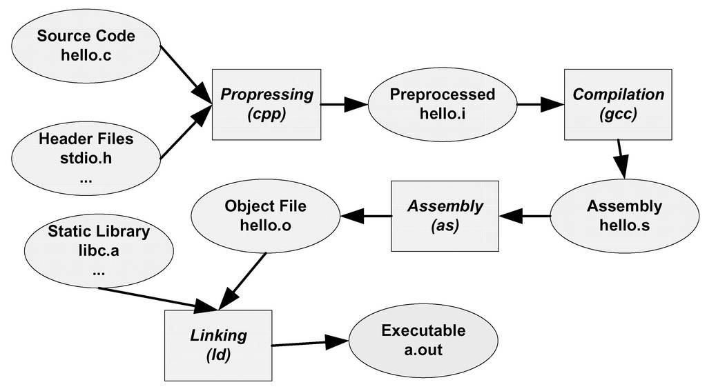

2.1 被隱藏了的過程
C語言的經典，“Hello World”程式幾乎是每個程式設計師閉著眼睛都能寫出的，編譯、執行一氣呵成，基本成了程式入門和開發環境測試的預設的標準。
#include <stdio.h>
int main()
{
printf("Hello World\n");
return 0;
}
在Linux下，當我們使用GCC來編譯Hello World程式時，只需要使用最簡單的命令（假設原始碼檔名為hello.c）：
$gcc hello.c $./a.out Hello World
事實上，上述過程可以分解為4個步驟，分別是預處理（Prepressing）、編譯（Compilation）、組譯（Assembly）和連結（Linking），如圖2-1所示。

2.1.1 預編譯
首先是原始碼檔案hello.c和相關的標頭檔，如stdio.h等被預編譯器cpp預編譯成一個.i檔案。對於C++程式來說，它的原始碼檔案的副檔名可能是.cpp或.cxx，標頭檔的副檔名可能是.hpp，而預編譯後的副檔名是.ii。第一步預編譯的過程相當於如下命令（-E表示只進行預編譯）：
$gcc –E hello.c –o hello.i
或者：
$cpp hello.c > hello.i
預編譯過程主要處理那些原始碼檔案中的以“#”開始的預編譯指令。比如“#include”、“#define”等，主要處理規則如下：
• 將所有的“#define”刪除，並且展開所有的宏定義。
• 處理所有條件預編譯指令，比如“#if”、“#ifdef”、“#elif”、“#else”、“#endif”。
• 處理“#include”預編譯指令，將被包含的檔案插入到該預編譯指令的位置。注意，這個過程是遞迴進行的，也就是說被包含的檔案可能還包含其他檔案。
• 刪除所有的注釋“//”和“/* */”。
• 新增行號和檔名標識，比如#2“hello.c”2，以便於編譯時編譯器產生除錯用的行號資訊及用於編譯時產生編譯錯誤或警告時能夠顯示行號。
• 保留所有的#pragma編譯器指令，因為編譯器需要使用它們。
經過預編譯後的.i檔案不包含任何宏定義，因為所有的宏已經被展開，並且包含的檔案也已經被插入到.i檔案中。所以當我們無法判斷宏定義是否正確或標頭檔包含是否正確時，可以檢視預編譯後的檔案來確定問題。
2.1.2 編譯
編譯過程就是把預處理完的檔案進行一係列詞法分析、語法分析、語義分析及最佳化後生產相應的組合語言程式碼檔案，這個過程往往是我們所說的整個程式構建的核心部分，也是最複雜的部分之一。我們將在下一節簡單介紹編譯的具體幾個步驟，這涉及編譯原理等一些內容，由於它不是本書介紹的核心內容，所以也僅僅是介紹而已。上面的編譯過程相當於如下命令：
$gcc –S hello.i –o hello.s
現在版本的GCC把預編譯和編譯兩個步驟合並成一個步驟，使用一個叫做cc1的程式來完成這兩個步驟。這個程式位於“/usr/lib/gcc/i486-linux-gnu/4.1/”，我們也可以直接呼叫cc1來完成它：
$ /usr/lib/gcc/i486-linux-gnu/4.1/cc1 hello.c main Execution times (seconds) preprocessing :0.01(100%)usr 0.01(33%)sys 0.00( 0%)wall 77 kB( 8%)ggc lexical analysis :0.00( 0%)usr 0.00( 0%)sys 0.02(50%)wall 0 kB(0%)ggc parser :0.00( 0%)usr 0.00( 0%)sys 0.01(25%)wall 125 kB(13%)ggc expand :0.00( 0%)usr 0.01(33%)sys 0.00( 0%)wall 6 kB(1%)ggc TOTAL :0.01 0.03 0.04 982 kB
或者使用如下命令：
$gcc –S hello.c –o hello.s
都可以得到組譯輸出檔案hello.s。對於C語言的程式碼來說，這個預編譯和編譯的程式是cc1，對於C++來說，有對應的程式叫做cc1plus；Objective-C是cc1obj；fortran是f771；Java是jc1。所以實際上gcc這個命令只是這些後台程式的包裝，它會根據不同的引數要求去呼叫預編譯編譯程式cc1、組譯器as、連結器ld。
2.1.3 組譯
組譯器是將組合語言程式碼轉變成機器可以執行的指令，每一個組譯語句幾乎都對應一條機器指令。所以組譯器的組譯過程相對於編譯器來講比較簡單，它沒有複雜的語法，也沒有語義，也不需要做指令最佳化，只是根據組語指令和機器指令的對照表一一翻譯就可以了，“組譯”這個名字也來源於此。上面的組譯過程我們可以呼叫組譯器as來完成：
$as hello.s –o hello.o
或者：
或者使用gcc命令從C原始碼檔案開始，經過預編譯、編譯和組譯直接輸出目的檔（Object File）：
$gcc –c hello.c –o hello.o
2.1.4 連結
連結通常是一個讓人比較費解的過程，為什麼組譯器不直接輸出執行檔而是輸出一個目的檔呢？連結過程到底包含了什麼內容？為什麼要連結？這恐怕是很多讀者心中的疑惑。正是因為這些疑惑總是揮之不去，所以我們特意用這一章的篇幅來分析連結，具體地說分析靜態連結的章節。下面讓我們來看看怎麼樣呼叫ld才可以產生一個能夠正常執行的HelloWorld程式：
$ld -static /usr/lib/crt1.o /usr/lib/crti.o /usr/lib/gcc/i486-linux-gnu/4.1.3/crtbeginT.o -L/usr/lib/gcc/i486-linux-gnu/4.1.3 -L/usr/lib -L/lib hello.o --start-group -lgcc -lgcc_eh -lc --end-group /usr/lib/gcc/i486-linux-gnu/4.1.3/crtend.o /usr/lib/crtn.o
可以看到，我們需要將一大堆檔案連結起來才可以得到“a.out”，即最終的執行檔。看了這行複雜的命令，可能很多讀者的疑惑更多了，crt1.o、crti.o、crtbeginT.o、crtend.o、crtn.o這些檔案是什麼？它們做什麼用的？-lgcc –lgcc_eh –lc這些都是什麼引數？為什麼要使用它們？為什麼要將它們和hello.o連結起來才可以得到執行檔？等等。
這些問題正是本書所需要介紹的內容，它們看似簡單，其實涉及了編譯、連結和庫，甚至是作業系統的一些很底層的內容。我們將緊緊圍繞著這些內容，進行必要的分析。不過在分析這些內容之前，我們還是來關注一下上面這些過程中，編譯器擔任了一個什麼樣的角色。